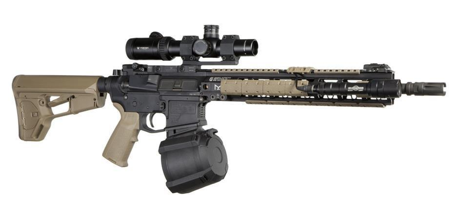
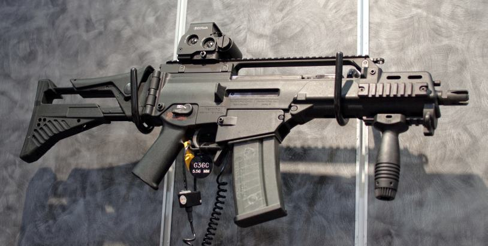

Patria k strednej triede airsoftových zbraní. Ide o prevažne dlhé útočné zbrane, poháňané zväčša vstavaným akumulátorom (modelárske NiMH, 1,2V, alebo modernejšie, často silnejšie ale na údržbu a prevádzku náročnejšie LiPol/LiFe) s elektromotorom, so zásobníkmi až do tisícov kusov streliva, vysokou kadenciou (okolo 800 rán za minútu), veľkou razanciou, presnosťou a dostrelom. Vysoká modifikovateľnosť je prísľubom zvýšenia dostrelu, presnosti a razancie.
Ich cena sa pohybuje okolo 100 – 400 € (útočné pušky / samopaly), 50 – 80€ (krátke / pištole). Využiteľný dostrel je cez 50 m, niektoré po upgrade aj cez 80 m. Energia strely nemodifikovaných zbraní sa pohybuje na úrovni plynoviek – okolo 0,7 J. Najvýraznejšou výhodou elektrických airsoftových zbraní sú nízke náklady a nároky na údržbu, ako aj možnosť používania aj pri nízkych teplotách (plynové zbrane sú kvôli tesneniam a expanzívnym vlastnostiam plynov pri týchto teplotách takmer nepoužiteľné).
Jedným s najväčších výrobcov AEG dovážaných na náš trh je japonská firma Tokyo Marui (TM), ktorá má vo svojom portfóliu množstvo samopalov, útočných i ostreľovacích pušiek – série M16, H&K MP5, G3, FA-MAS, AK47, Steyr, Sig a ďalšie. V súčasnosti sa však na tohoto výrobcu kvalitných AEG doťahujú čínski výrobcovia (napr. firma CYMA) – ich najväčšou devízou je relatívne nízka zaobstarávacia cena. Najvýraznejšou výhodou elektrických airsoftových zbraní sú nízke náklady a nároky na údržbu, ako aj možnosť používania aj pri nízkych teplotách (plynové zbrane sú kvôli tesneniam a expanzívnym vlastnostiam plynov pri týchto teplotách takmer nepoužiteľné).
 